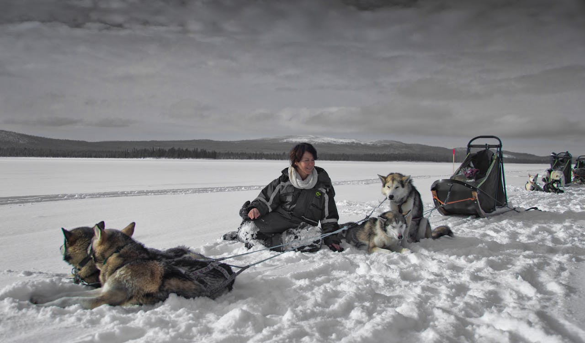

Ismerd meg a szánhúzó kutyafajtákat
A szánhúzásnak több fajtája létezik. A rövid távú sprintversenyekre, a hosszú távú több napos versenyekre, illetve a folyamatos sarki körülményekhez mind más és más kutyák a legalkalmasabbak. Emellett a standardizálódásnak köszönhetően az északi kutyákból család barát hobbi kutyák is kialakultak. Tekintsük át az ismertebb szánhúzó kutyákat.